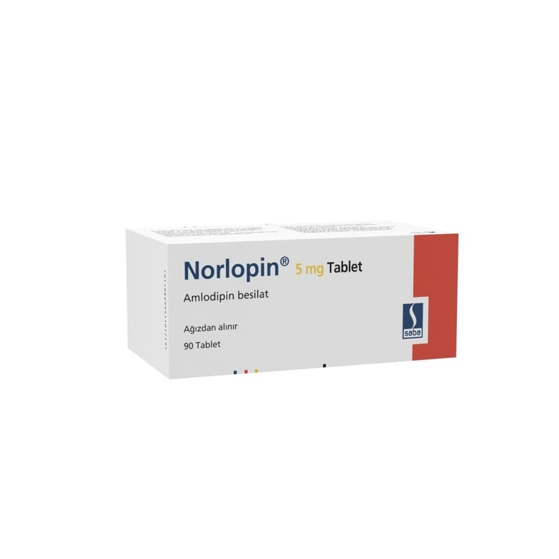

Norlopin 5 mg Tablet, 90 Adet

Ne için kullanılır
KT · Bölüm 1 NORLOPĠN ağız yolu ile alınır ve her tablet 5 mg amlodipine eĢdeğer amlodipin besilat içerir. Kalsiyum antagonistleri olarak bilinen ilaç grubuna dahildir. NORLOPĠN 20 ve 90 tabletlik blister ambalajda bulunur. NORLOPĠN yüksek kan basıncının (hipertansiyon) veya anjina adı verilen belirli tip göğüs ağrısının tedavisinde kullanılan bir ilaçtır. Hipertansiyon: Yüksek kan basıncı, kanın damarlara yaptığı baskıdan oluĢur. NORLOPĠN damarların geniĢlemesini, kanın damarlarda daha kolay dolaĢmasını sağlayarak kan basıncını düĢürür. Anjina, kalp kasının bir kısmına yeterli kan gitmediğinde oluĢan ağrı veya rahatsızlık hissidir. Anjina genellikle göğüs bölgesinde baskı veya sıkıĢtırıcı ağrı Ģeklinde hissedilir. Bazen bu ağrı kollarda, omuzlarda, boyunda çenede veya sırtta da hissedilir. NORLOPĠN bu ağrıyı geçirebilir.